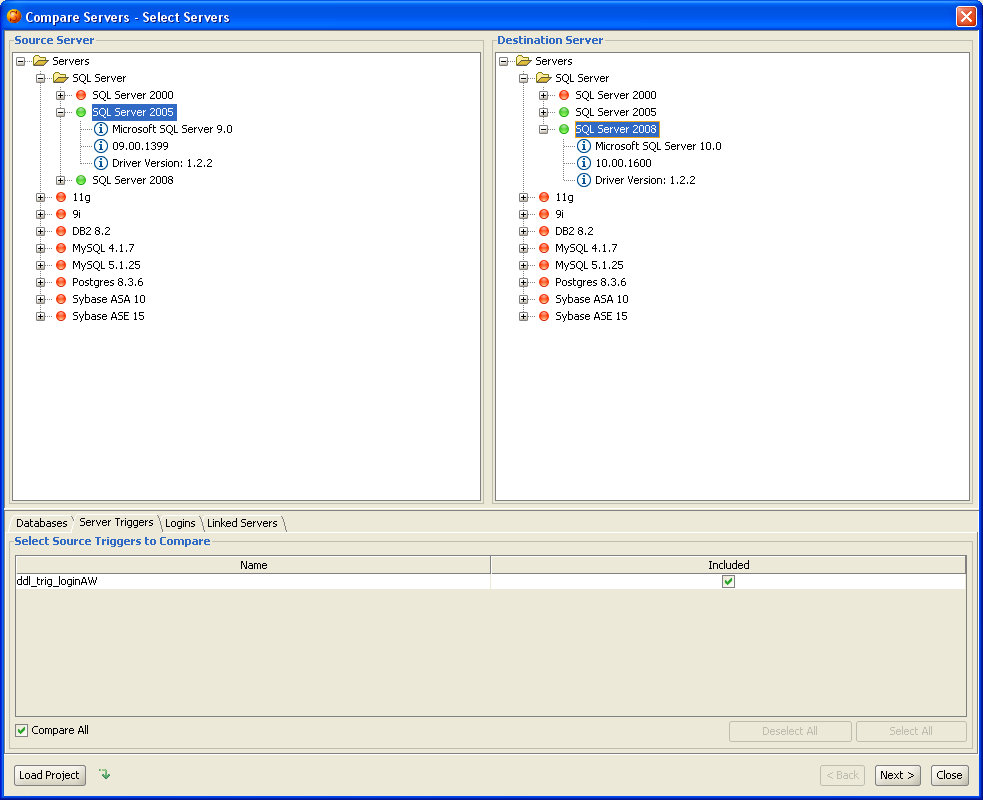
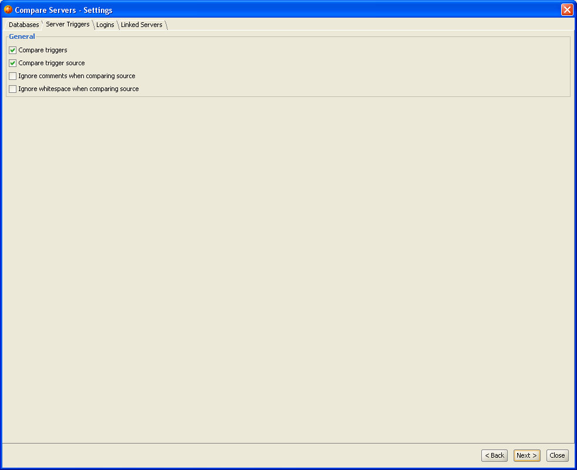
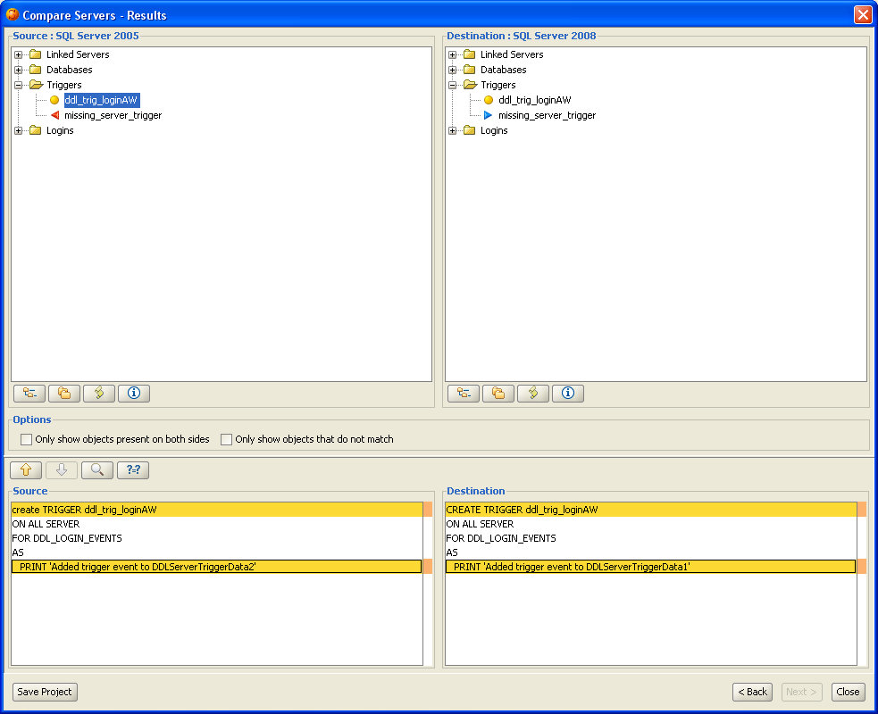
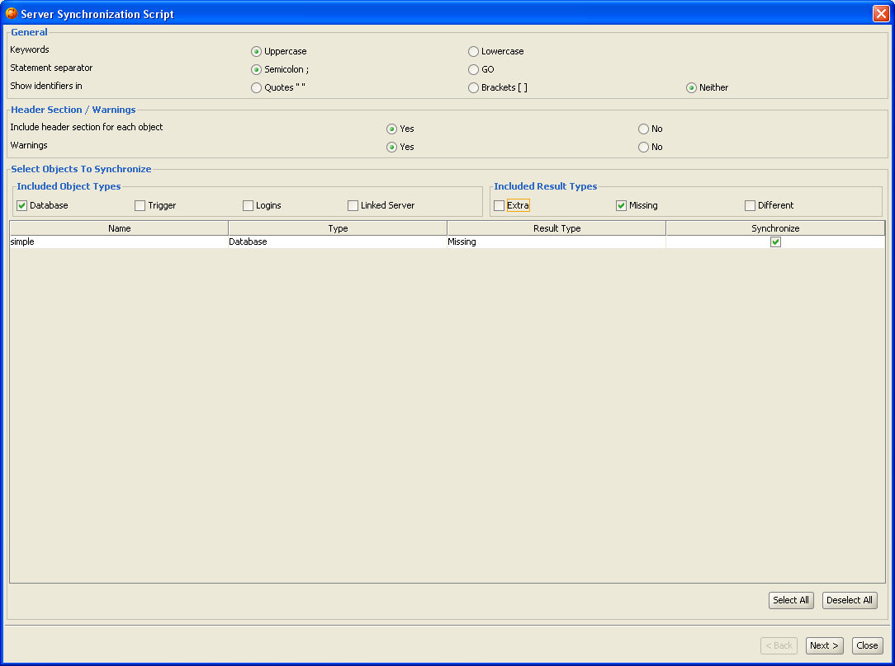
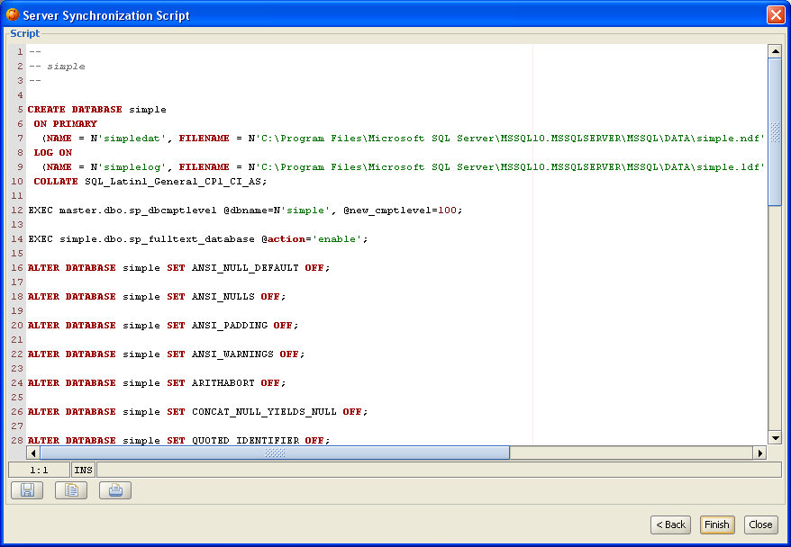
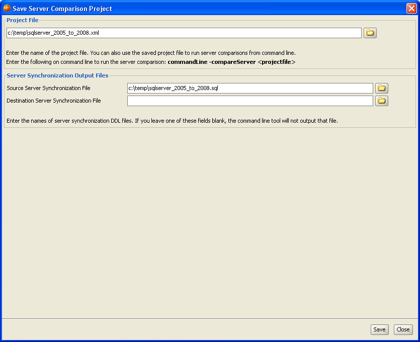

Server Comparison Tool allows you to compare server-level objects - for example databases, tablespaces, roles and users - between two separate database servers. It will report any discrepancies between the servers such as missing or mismatching users, roles, tablespaces and databases. Both servers must be running the same DBMS product, such as Oracle. Currently the server comparison is supported for Oracle, Postgres, DB2 LUW, Sybase ASE and SQL Server 2005 and later.
You can invoke the Server Comparison Tool from the 'Tools' menu in the main toolbar of DB Solo.
The first screen of the comparison tool allows you to select the servers to compare as well as individual objects within the selected server.
The tree control on the left hand side allows you to select 'source' of the comparison and the right side lets you pick the 'destination' server.
After selecting the source server you can select individual objects to compare within that server.
By default all of these objects will be compared in the selected servers. The tabbed window at the bottom of the first screen allows you to manually pick the objects to compare.
To do so, uncheck the 'Compare All' checkbox and check/uncheck the items you wish to compare.

Figure - Select Server Screen
After selecting the servers and the associated objects to compare, click on 'Next' to move to the settings panel.
The various tabs in the settings screen allow you to fine-tune the comparison process. All settings will get persisted when you close DB Solo, so you don't have to re-enter the same settings next time you want to run the comparison. There is a separate tab for each group of objects to compare.

Figure - Trigger Comparison Settings
After applying all the settings you wish to change, click on 'Next' to start the comparison process. Notice that if the number of objects to compare is large , the comparison can potentially take several minutes or more to complete.
After DB Solo has completed the comparison process, you will see the results presented as two tree contorls. Again, the left side is the 'source'
server and the right one is the 'destination' server.
The trees will contain all objects that were compared, unless the 'Only show objects present on both sides' checkbox is checked. In that case, the trees will only
contain objects that were found in both servers.
When you select an object in either tree control, the 'Explain' panel at the bottom of the screen will give more details regarding the comparison results for the
selected object. In the figure below, the source code of the selected trigger does match in the source and destination servers, as indicated in the detail panel.
Each node in the tree controls is colored using the following coloring scheme.

Figure - Results Panel
Below each tree control are buttons that allow you to:
The server comparison tool has a Synchronization Script creator which allows you to create a DDL script that contains all required SQL statements to synchronize the servers you compared. If you generate the script for the source side, it will contain SQL statements that will make the source server identical with the destination server. By the same token, generating the script on the destination side will modify destination server to make it identical with the source server.
By clicking the Create Synchronize Script button on either side, you can invoke the Server Synchronization Wizard Dialog.

The first screen of the dialog allows you to change the script generation settings. The settings screen will let you change the case of the SQL statements, the statement separator type and whether identifiers are shown in brackets, quotes or neither. Notice that these settings will not affect the source code of triggers as they are not parsed by the tool.
You can also select if you wish to have comments or warnings in the output DDL script.

The last page of the Synchronization Script Wizard will show the DDL script based on the comparison results and your settings. The buttons on this screen let you save the script to a file or copy it to the system clipboard.

The 'Load Project' button on the first page of the comparison tool allows you to open projects you have saved earlier. The project files contain information about the source / destination servers you have selected, objects you selected for comparison as well as all the comparison settings from the second page of the tool.
After completing a server comparison, you can save your settings on the last page of the comparison tool. Clicking on the 'Save Project' button will bring up the 'Save Server Comparison Project' dialog where you can select a file name for your project file as well as define the names of the comparison results' output files.
The first section of the page titled 'Project File' lets you select the name of the project file.
The second section contains fields for selecting the names of the synchronization DDL script files.
Notice that you must specify at least one output file for the command line comparison tool.

Server comparison can be run from a command shell using settings from a saved project file. This allows you to run server comparisons regularly using cron or a similar mechanism. The following shell command will run a server comparison from settings in 'myproject.xml':
commandLine -serverCompare myproject.xml
where 'myproject.xml' is a project file. You can use project files on different machines as long as the configured server connection names match. The project files are xml text files that can be edited manually outside DB Solo.
The command line tool will output errors and other messages in compare.log file.
| Back to Index |
DB Solo www.dbsolo.com support@dbsolo.com |